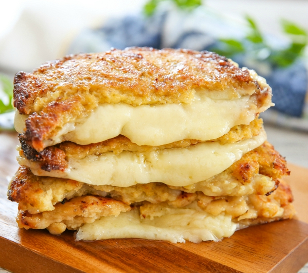

Cauliflower Grilled Cheese

(Image/
Kirbie's Cravings)
and (Recipe/
Delish Website).
INGREDIENTS
- 1 head cauliflower (makes approximately 4 cups processed cauliflower)
- 2 eggs, lightly beaten
- 1/2 cup finely grated parmesan cheese
- 1/2 tsp. oregano
- 11/2 cups shredded white cheddar or your cheese of choice
DIRECTIONS
- Cut the cauliflower into florets. Next, process the cauliflower florets in a food processor until
the texture resembles rice. You could grate the cauliflower with a cheese grater as well.
- In a medium bowl, combine cauliflower, eggs, parmesan and oregano. Season with salt and pepper and mix
until combined well.
- Heat a large skillet over medium heat. Spray with cooking spray, or coat with oil, then scoop the
cauliflower mixture into a small patty on one side of the pan. Repeat to form a second patty on the other side.
(These are your 'bread' slices.) Press down on both pieces with a spatula to flatten and
cook till golden brown underneath, about 5 minutes. Flip and cook until the other
sides are golden, approx 3 minutes more.
- Top one cauliflower slice with cheese then place the other cauliflower slice on top. Cook until the
cheese is melted, about 2 minutes more per side.
- Repeat with remaining ingredients.
Contact Me
If you have questions or comments please feel free to
email me.
The University of Montana
32 Campus Drive
Missoula, MT 59812
Campus Operator: (406) 243-0211